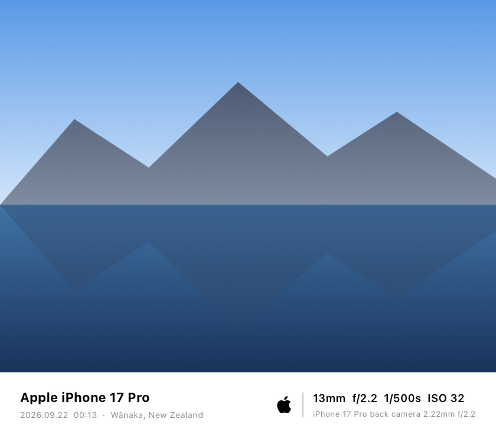
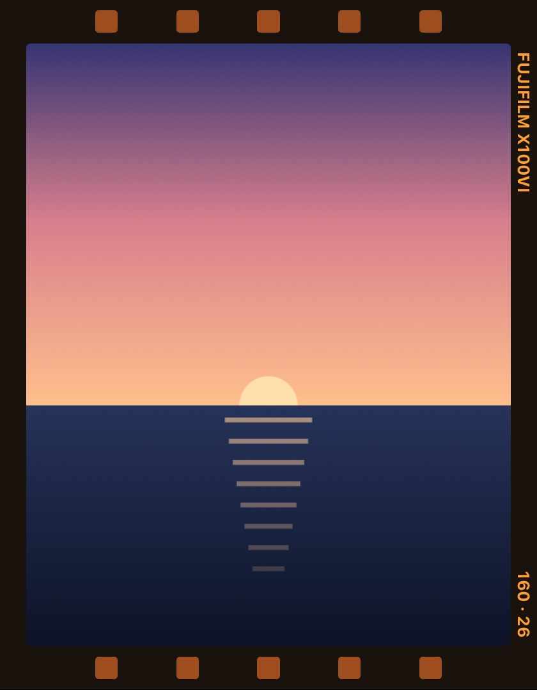
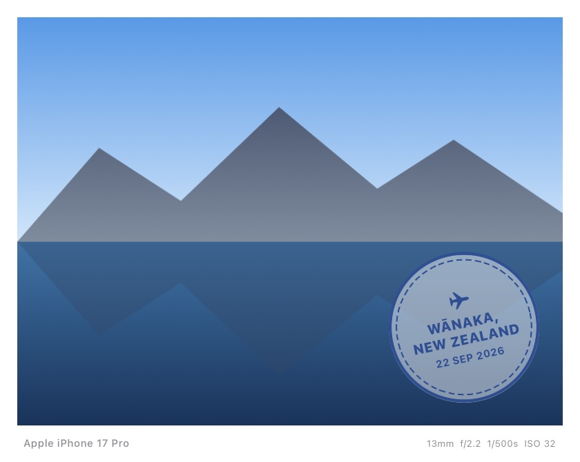
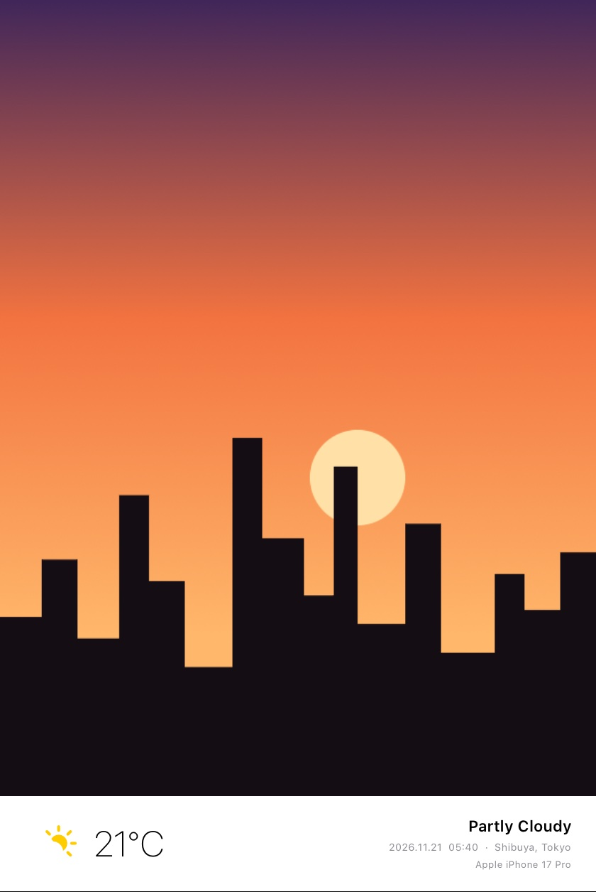
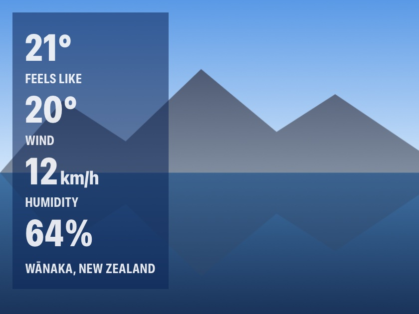
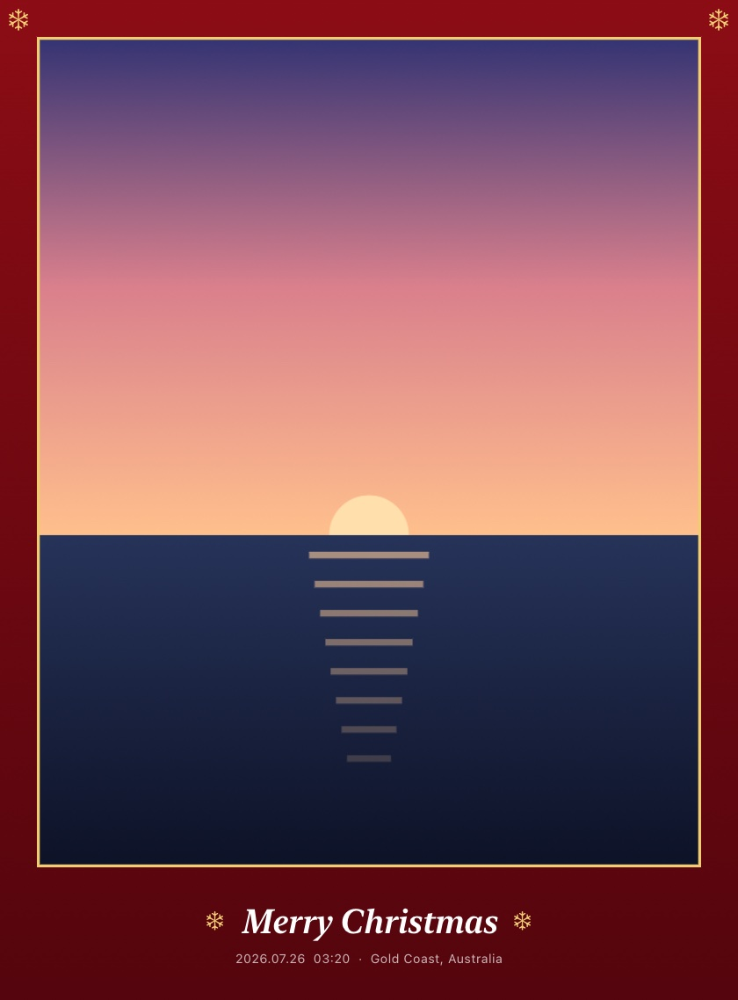
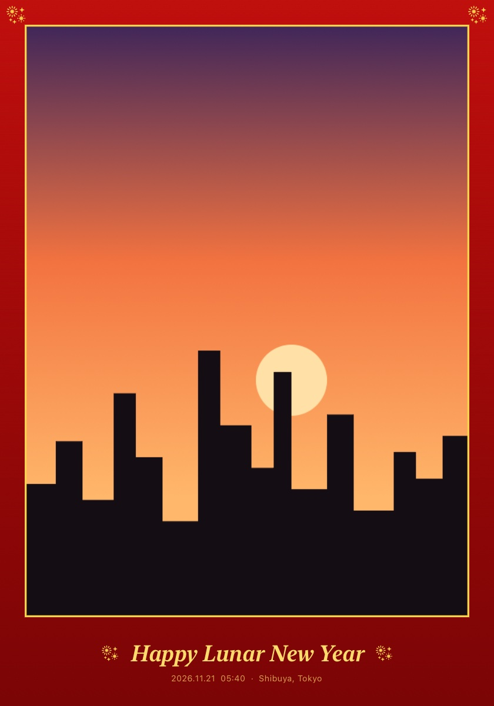
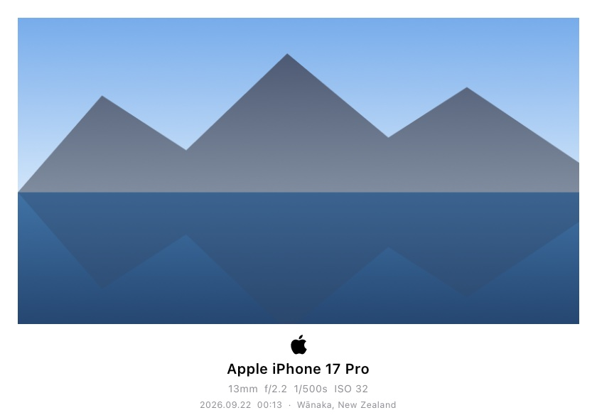
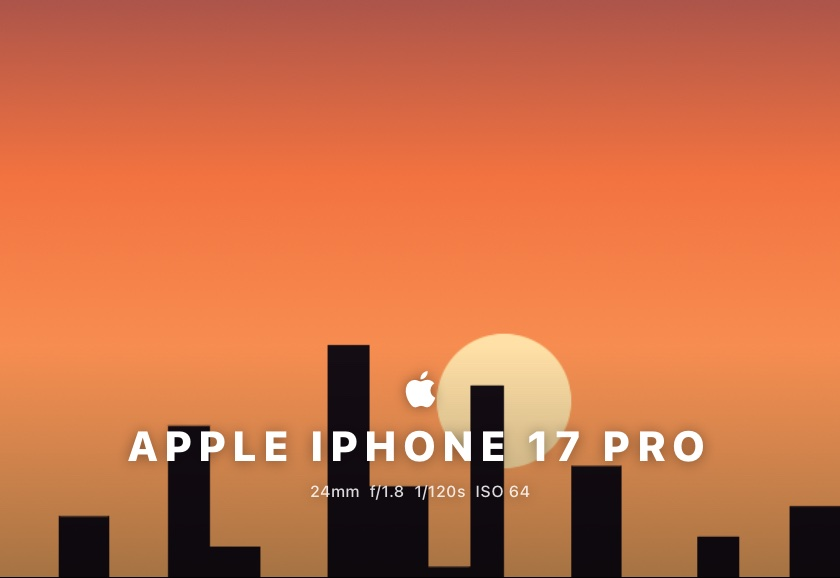

Camera
White borders, info bars, cinematic black, blurred backdrops and gallery mats, with your camera's logo and settings.

Free for iPhone · Made for iPhone Duo
DuoFramer reads your photo for you, the camera and lens, the settings, the date and where you took it, and turns it into a polished, shareable frame in seconds.
How it works
There's nothing to type. DuoFramer fills in the details, and what you see is exactly what you export.
Camera, lens, focal length, aperture, shutter speed and ISO, read straight from the photo.
A real place name from the photo's location, its coordinates, or both. Add the weather, in °C or °F.
When a frame crops your photo, DuoFramer finds the faces, or the most eye-catching part, and keeps them in view. All on your device.
Pick up to 50 photos, give them one look, tweak any single one, and export them all into a new collection.
Pinch to zoom, drag to reposition, and choose which details show. Give any frame your own title.
Your photos are framed on your iPhone. No account, no tracking, no ads.
55 frames
From minimal camera bars to film strips, postcards, weather cards and holiday greetings. Every frame is laid out at any size, so exports look exactly like the preview, at full resolution.
White borders, info bars, cinematic black, blurred backdrops and gallery mats, with your camera's logo and settings.

35mm negatives with real sprocket holes, and 120 medium format in 6×6, 6×4.5, 6×7 and 6×9, edge print and all.

Postcards, passport stamps, map pins, boarding passes and coordinates, with real place names.

Forecast bars, big temperatures, wind and humidity, and frames that work out the season.


Christmas, New Year, Lunar New Year, Valentine's Day, Easter, Halloween, Diwali, Hanukkah, Thanksgiving and birthdays.


Frames shaped exactly like the Duo's inner and outer screens, made to fill them edge to edge.


Made for iPhone Duo
Fold your iPhone Duo into tent mode and DuoFramer becomes a photo frame. Your chosen collection plays full screen on the outer display, cross-fading from one frame to the next.
Free, with nothing held back
All 55 templates, batch framing, collections, carousels and tent mode are included. No subscriptions, no in-app purchases, no ads and no watermarks.